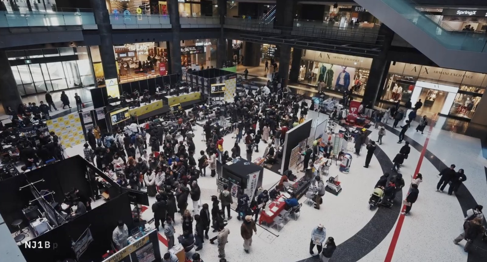

企業・学校・自治体向け
講演会の実施
社内eスポーツ勉強会、学校での業界セミナー、PRイベント、起業に関する講演まで、 目的に合わせて企画・登壇します。
COMMUNITY FIRST. OSAKA.
プレイヤーも、地域も、学校も、企業も。
ゲームコミュニティを大切に、
大阪のeスポーツをともに育てていきます。

NEWS
OUR PURPOSE
ゲーマーファースト。
ゲームコミュニティファースト。
大阪府eスポーツ連合は、ゲームを楽しむ人と、その文化を支える人を大切にしています。自治体・学校・企業とつながり、講演やイベント協力、マッチング、学生支援を通じて、挑戦できる場を広げます。
団体概要を見るWHAT WE DO
講演からイベント協力、学生支援まで。目的に合わせてご相談ください。
企業・学校・自治体向け
社内eスポーツ勉強会、学校での業界セミナー、PRイベント、起業に関する講演まで、 目的に合わせて企画・登壇します。

イベント主催者向け
体験会や大会に必要な機材相談、ゲームIP許諾の確認、イベント会社の紹介など、 現場づくりを支援します。

企業・学校向け
eスポーツ向けサービスや製品の相談、ビジネスマッチング、学生と企業の就職活動支援を行います。

自治体向け
大阪府が設立した大阪eスポーツラウンドテーブルへ参画し、 大阪府のeスポーツ産業の発展と振興に協力しています。

自治体・主催者向け
国スポ、ねんりんピック、ゲームIP主催イベントなど、国内外のeスポーツ関連イベントを大阪府へ誘致します。

会員・学生向け
会報、勉強会、交流会を通じて、会員と学生の学びを支援します。 JeSU大阪eスポーツ塾は現在準備中です。
EVENTS
関西のゲームコミュニティの今と、これから。佐加 一騎さん・竹村 龍樹さんを迎え、学びと交流の時間をつくります。
eスポーツ関連イベントの掲載希望を専用フォームで受け付けています。
OUR CONNECTIONS
講演・機材協力・マッチングを通じて、大阪のeスポーツ振興に取り組んでいます。
大阪eスポーツラウンドテーブル（OeGG）への参画を通じ、地域のeスポーツ産業の発展と振興に協力しています。
OeGGについて ↗社内勉強会や学校での業界セミナー、体験会・大会への機材協力など、現場の目的に合わせた支援を行っています。
協力について相談する ↗会報、勉強会、交流会を通じて、会員・学生の学びと交流を支えます。JeSU大阪eスポーツ塾は準備中です。
会員資料（PDF）↗ABOUT US
ゲームを愛する人と、地域・企業・学校をつなぐ、大阪のeスポーツ団体です。
BOARD MEMBERS

代表理事
大阪から日本を元気に！

理事
大阪からゲームの楽しさとeスポーツの熱を世界へ発信します！

理事
積み上げられたゲームコミュニティ文化を尊重し、eスポーツとの調和を目指す。

監事
eスポーツのポテンシャルを信じています。
CONTACT
講演、後援、イベント協力、会員・連携のご相談をお待ちしています。